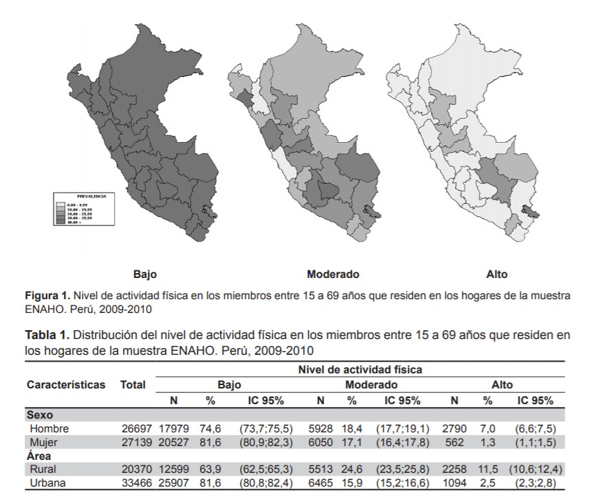

PROBLEMÁTICA
El bajo nivel competitivo del deporte peruano se refleja en la cantidad de medallas obtenidas y el número de deportistas peruanos participantes en el último Juego Olímpico Río 2016. En este encuentro participaron un total de 29 deportistas peruanos obtuvieron 0 medallas, a comparación de nuestro país vecino Colombia que participaron 147 deportistas en 23 deportes diferentes y obtuvieron un total de 8 medallas. Los motivos que hemos identificado a este bajo nivel competitivo son la falta de orientación deportiva por parte de los entrenadores en colegios de provincias con la finalidad de captar talento deportivo; también, el poco profesionalismo por parte de los deportistas en seguir las indicaciones de los entrenadores afectando el progreso de su rendimiento y el escaso soporte económico por parte del deportista debido a que no todos presentan una cantidad considerable de empresas auspiciadoras. Por ello, se ha elaborado el sistema Medantro, el cual se centra en solucionar la falta de orientación deportiva por parte de profesores de colegios de provincia.
Figura 1. Pirámide de desarrollo deportivo.
PROBLEMA
“BAJO NIVEL COMPETITIVO EN DEPORTISTAS DE ALTO RENDIMIENTO”
IDENTIFICACIÓN DE LOS EFECTOS
1) La escasa cultura deportiva en la población peruana y poca valoración y reconocimiento del deportista de alta competencia.
El deporte no está posicionado en la mente de la mayor parte de la población peruana como un generador de bienestar personal y social. La población ve al deporte como un espacio de ocio y entretenimiento, pero no como un elemento que forma parte del desarrollo físico y mental de la persona. A nivel de políticas públicas tampoco se ha priorizado el deporte como un elemento clave en la formación integral del niño, ni como un medio para la reducción del pandillaje y como un medio generador de oportunidades de desarrollo. Además, muchos deportistas que han puesto en alto el nombre del Perú con su esfuerzo y dedicación, son poco reconocidos y valorados por la mayor parte de la población.
2) Escasa participación de los medios de comunicación en la difusión de las distintas disciplinas deportivas
La difusión de otras disciplinas deportivas es mínimo,con excepción del fútbol y el vóley.Más que un problema de los mismos medios de comunicación, el problema está en el poco atractivo que generan las otras disciplinas deportivas, que a pesar de su enorme potencial, no cuentan con estrategias de marketing y comunicación para hacer de su deporte y los campeonatos más atractivo para la población.
3) La falta de patrocinio por parte de marcas exclusivas para los deportistas
Además de talento y perseverancia, ser un atleta de élite requiere financiamiento. En ese sentido, el patrocinio es una de las mejores opciones para solventar entrenamiento, alimentación, viajes, entre otros gastos que tiene un deportista.Sin embargo el tener una baja cantidad de deportistas peruanos que participen en encuentros deportivos internacionales ocasiona que las empresas no inviertan en el área deportivo.
MEDICIÓN DE LOS EFECTOS
La escasa cultura deportiva en la población peruana se refleja en la cantidad de tiempo que le dedican a realizar actividad física. Lamentablemente no se cuenta con un estudio sobre la implementación del tiempo en la población peruana. Sin embargo, se ha tomado como referencia el estudio elaborado por el doctor Tarqui, Sánchez, Álvarez y Valdivia publicado en el 2013 para determinar el nivel de actividad física de los miembros del hogar entre 15 a 69 años. El resultado de este estudio dio a conocer que un 81,6 % de las mujeres encuestadas realizan con baja frecuencia actividad física, además en la zona urbana se realiza poca actividad física. Por otra parte, la inactividad física y el sedentarismo están asociados a un amplio rango de enfermedades, además el avance de la tecnología ha incrementado los niveles de sedentarismo, sobre todo en áreas urbanas.
